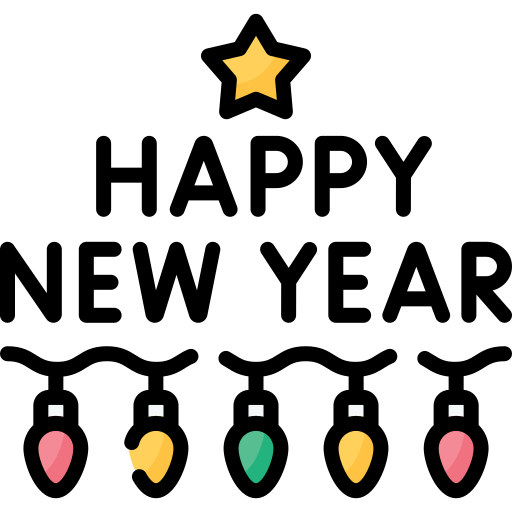

Sei que tive essa ideia um pouco tarde e já passou do primeiro dia, mas nunca é tarde para desejar um bom começo de mês 🐵.
"Que dezembro seja o mês de conquistar tudo o que você tem desejado. Não importa o quão grandes ou pequenos sejam os passos, o importante é seguir em frente com confiança e força. Que você continue a se superar, a aprender, a correr atrás dos seus sonhos e a brilhar em cada área da sua vida. Você é mais capaz do que imagina, e eu acredito em você em cada momento dessa jornada. Vamos aproveitar o mês, dar o nosso melhor e fazer acontecer!"
Diferente de ontem, hoje ainda podemos aproveitar esse dia de pequenas surpresas para dezembro, então vou lhe mandar um desafio para hoje...
Call me 📞💕
"E o que nós chamamos de vida, é o amor que nos ensina a viver." – Julieta, Ato II, Cena 2
"Os Sete Hábitos das Pessoas Altamente Eficazes" de Stephen R. Covey
"O primeiro hábito é ser proativo. Isso significa reconhecer que somos responsáveis por nossas reações. Não podemos controlar tudo o que acontece ao nosso redor, mas sempre temos o poder de escolher como responder. As pessoas proativas fazem escolhas conscientes que estão alinhadas com seus princípios e objetivos de vida, em vez de reagir a situações ou deixar que fatores externos definam seu comportamento."
Não é exatamente uma receita natalina para combinar com o mês de dezembro, mas é uma receita que você gosta e é saudável para ficar preparada para poder fazer o seu exercício amanhã
Isso foi uma receita simples e que eu achei na internet, você pode mudar como quiser e fazer do seu jeito ❤️.
Te amo e espero que tenha sido uma boa comida para encher suas energias.
Não sei que horas você vai estar vendo isso, posso já ter chegado ou estar chegando, mas o que importa é que vou estar com você e isso me deixa muito feliz. Mal posso esperar para criar novos momentos e memorias ao seu lado... 🥰
Te amo muito!
Existem muitas músicas que me lembram de você, mas essa é especial, pois hoje podemos dançar ela juntas mais uma vez.
Para hoje eu quis pedir um momento de meditação com você. Apenas 10 minutos para meditarmos em busca de foco e paciência para ter um bom dia 😃.
Só queria lembrar desse dia que foi muito bom e nadamos muito. Todos os momentos com você são incríveis e espero ter cada vez mais momentos assim, ou seja, sempre ao seu lado!!
Aqui vai entrar o momento natalino de verdade... Vamos assistir "Esqueceram de Mim" 🙉. Um clássico de natal que não podemos passar o dezembro sem ver pelo menos uma vez.
"Não espere por uma oportunidade extraordinária. Agarre as ocasiões comuns e as faça grandes." — Orison Swett Marden
Para trazer esse dezembro como ele deve ser, acho que é certo ouvir uma música de natal para entrar no clima
Mesmo nos dias em que a distância nos separa, sinto que você está sempre ao meu lado. Cada momento longe de você só me fez valorizar ainda mais o que temos. Estou tão grata por cada risada, cada conversa e, principalmente, por ter você na minha vida. Não importa onde estejamos, meu coração sempre encontra o seu. Te amo e estou tão feliz de poder estar ao seu lado, você é o meu presente.
O Natal é um momento de espalhar amor e solidariedade. O desafio é doar um brinquedo, assim podemos iluminar o dia de uma criança e fazer com que ela sinta a alegria dessa época.
Como hei de comparar-te a um dia de verão?
És muito mais amável e mais amena:
Os ventos sopram os doces botões de maio,
E o verão finda antes que possamos começá-lo:
Por vezes, o sol lança seus cálidos raios,
Ou esconde o rosto dourado sob a névoa;
E tudo que é belo um dia acaba,
Seja pelo acaso ou por sua natureza;
Mas teu eterno verão jamais se extingue,
Nem perde o frescor que só tu possuis;
Nem a Morte virá arrastar-te sob a sombra,
Quando os versos te elevarem à eternidade:
Enquanto a humanidade puder respirar e ver,
Viverá meu canto, e ele te fará viver.
"Um Conto de Natal" de Charles Dickens
"Era a véspera de Natal. As ruas estavam cheias de pessoas apressadas e alegres, as crianças cantavam canções natalinas e as lojas estavam decoradas com brilhantes enfeites. Mas na oficina de Ebenezer Scrooge, a única coisa que se ouvia era o som de sua caneta riscando o papel. Scrooge era conhecido por sua frieza, sua avareza e seu desdém por tudo o que era alegre e festivo. Ele achava o Natal uma perda de tempo e uma oportunidade para gastar dinheiro."
Esse foi apenas um trecho de teste para entender como é o livro
Hoje vamos fazer cartões de natal uma para a outra! É uma atividade legal e mais um motivo para enviar um recadinho para você hihihi. Não precisa ser muita coisa, apenas desejar um feliz Natal e enviar um leve recadinho com carinho 🥰
Eu vou estar com o material já ou vou comprar, mas vamos fazer juntas.
Minha vida, eu amo o jeito em que você é forte e determinada, segue a sua vida mesmo com qualquer obstáculo na frente e esse é mais um motivo para eu lhe amar tanto. Cada dia você se esforça e dá um passo a mais em direção aos seus sonhos. Estou aqui com você, sempre torcendo e acreditando no seu potencial. Você é incrível!
Essa receita já não vai mais ser saudável. Como estamos nos aproximando do natal, acho que temos que adocicar esse momento.
Vamos fazer uma quase versão de s'mores
Apesar de ser tóxica(brincadeira) e querer você toda para, não posso deixar de lembrar dos seus amigos e da importância que eles tem na sua vida. Já estamos quase no natal e é importante ressaltar como eles são importantes para você.
"A verdadeira amizade é um dos maiores presentes que podemos oferecer, especialmente no Natal, quando o calor dos corações se torna ainda mais importante. Amigo é aquele que ilumina o seu caminho, compartilha risadas e, nos momentos difíceis, se torna um abrigo seguro. No Natal, a amizade é o que torna as celebrações mais completas e os desafios mais leves."
Vá até que eu irei lhe dar a sua surpresa do dia. É algo simples, mas é uma coisa fofa para poder lhe dar.
Meu amor, o Natal já está bem ali e fico refletindo sobre como essa época é significativa para mim e como estou grata por estarmos passando ela juntas. Sei que, para você, pode ser um momento difícil, e quero que saiba o quanto é especial para mim que você esteja fazendo um esforço para estarmos juntas nesse período. Espero que, com o tempo, possamos ressignificar o Natal, criando novas memórias e tornando essa época ainda mais bonita ao lado uma da outra. Eu te amo, e mal posso esperar para celebrar tudo o que conquistamos juntas até aqui
Hoje finalmente chegou o dia da nossa ceia! Estou tão feliz por podermos fazer isso juntas, planejando cada detalhe e criando essa memória incrível. Cozinhar ao seu lado, preparar tudo com tanto carinho e ver o resultado final vai ser uma experiência única, e a melhor parte é que estou fazendo isso com você. Não importa o quão simples ou grandiosa seja a refeição, o que importa é o que estamos construindo juntas. Mal posso esperar para compartilhar essa noite com você, celebrando o nosso amor e a nossa união. Te amo!
Hoje não temos como escapar de ver "O Grinch"! É o melhor filme de natal e quero poder ver ele no momento perfeito dele, o próprio Natal!! Vamos fazer uma comidinha especial e aproveitar um filme bem tranquilo juntas.
Logo depois de um dia bem tranquilo de natal, acho que devemos continuar esse momento com uma música calma e aproveitar juntas.
Uma das nossas primeiras fotos juntas para lembrar o tanto que passamos para chegarmos aqui e apesar de não ter sido perfeito, eu faria tudo novamente para ter o agora com você e vou fazer muito mais para ter o futuro com você.
Estamos tão perto do Ano Novo, e acho importante reservarmos um momento para refletir sobre tudo o que vivemos este ano e o que desejamos para o próximo. Pode ser escrevendo ou apenas pensando, o importante é colocar esses pensamentos em ordem. Isso nos ajuda a visualizar o futuro e a expressar gratidão por tudo o que conquistamos até agora.
"O ano novo oferece a chance de recomeçar, de se reinventar, de mudar aquilo que não nos agrada e de continuar o que já está dando certo. É uma página em branco, pronta para ser preenchida com novas experiências, novas vitórias e muito aprendizado. Que você seja capaz de abraçar as oportunidades e transformá-las em momentos de crescimento."
Uma música empolgada e refrescante para chegarmos em 2025 com um alto astral
Chegamos ao final de mais um ano, e é incrível olhar para trás e ver tudo o que vivemos até agora. O ano de 2025 está logo ali, cheio de possibilidades, e é o momento perfeito para começar a traçar nossos objetivos e sonhos. Vamos pegar um tempo para refletir sobre o que desejamos alcançar, aprender e conquistar no próximo ano. Vamos escrever as metas, grandes ou pequenas, e entrar em 2025 com um coração cheio de esperanças e determinação. Vamos fazer desse ano o melhor de todos!
